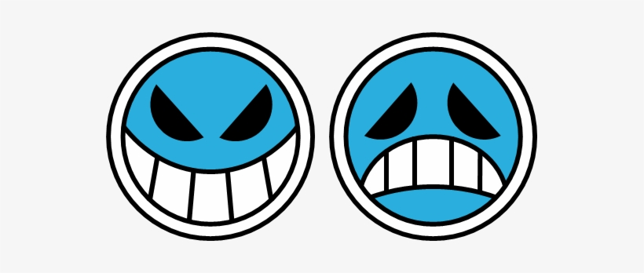

Portgas D.Ace
Second commander of the Whitebeard pirates, Gol D.Roger's Son.
Ace using the Mera Mera no mi devil fruit against Blackbeard.
This is the story of ...
- Portgas D. Ace, born Gol D. Ace is the biological son of Gol D. Roger and Portgas D. Rouge, and adoptive grandson to Monkey D. Garp, and adoptive brother to Monkey D Luffy, and Sabo.
- Ace was raised by Dadan mainly, and Monkey D. Garp, with his 2 brothers Monkey D Luffy, and Sabo.
- Ace always wanted to be a pirate so at the age of 17 Ace set sail to sea, and along the way met Deuce who both would later make the Spade Pirates.
- The Spade Pirates and Ace became slowly infamous among the world, and this made the World Government invite Ace to join the Shichibukai, Ace refused.
- Somewhere along his journey Ace encountered Jinbei one of the Shichibukai at the time. They both fought an epic battle ending in both collapsing.
- Whitebeard hearing about Ace wanting to take his head, appeared out of nowhere meeting with the Spade Pirates and Ace. The Spade Pirates engaged in a very one sided battle, Ace had to wall them both apart in the brink of death.
- Whitebeard confronted Ace offering him to become one of his "sons", Ace refused, then got knocked out and dragged to the Moby Dick.
- Ace woke up in the Moby Dick to find out he's considered now one of Whitebeard's son, and to keep his crew alive he had to stay.
- Ace however still had the intent to kill Whitebeard, with every attempt ending in failure.
- Marco and Ace started to have a conversation, Marco telling Ace about Whitebeard's father-son relationship. After the conversation Ace finally accepted being one of Whitebeard's sons, and having the Whitebeard symbol on his back.
- One day Ace defeated a pirate named Doma, which made Ace promoted to 2nd Division Commander of the Whitebeard Pirates.
- Future Blackbeard, Marshall D. Teach saw and heard about 4th Division Commander, Thatch's possible new devil fruit, the Yami-Yami no Mi. Marshall D. Teach then one night murdered Thatch to obtain the Yami-Yami no Mi, and running away.
- Ace hearing about this, is furious and wanting to avenge Thatch, went out to sea to search for Marshall D. Teach.
- On his search for Teach Ace gave a letter to Monkey D Luffy to visit him in Alabasta, and Monkey D Luffy did just that.
- When is Alabasta Ace was in a restaurant Smoker saw him and they both engaged in battle. During the fight Ace saw Monkey D Luffy , and after the battle went to meet him, giving Monkey D Luffy his Vivre Card.
- While Ace is on the search for Teach, he found him on Banaro Island then engaged in battle with the Blackbeard Pirates. However in the end Ace was defeated, captured, then sent to the World Government for his execution at Marineford.
- During his public execution Whitebeard, and all his allies, and the Impel Down escapees, and they started a war with all of Marineford.
- After a successful plan with Monkey D Luffy, and Mr. 3 to release Ace was executed, Ace was freed and fought along side the Pirates, and escapees. Then attempted escape, but then Akainu started insulting Whitebeard, which made Ace furious then Ace and Akainu fought.
- Akainu's magma was too strong for Ace so he lost the battle, then Akainu attempts to kill Monkey D Luffy while defenseless, but last second Ace came in to block the attack causing fatal hole in his chest. Ace started crying and said his last words before his last moments.
"Old man, everyone! And you Luffy. Even though I've been good for nothing my whole life, even though I have the blood of a demon within me. You guys still loved me! Thank you so much!"